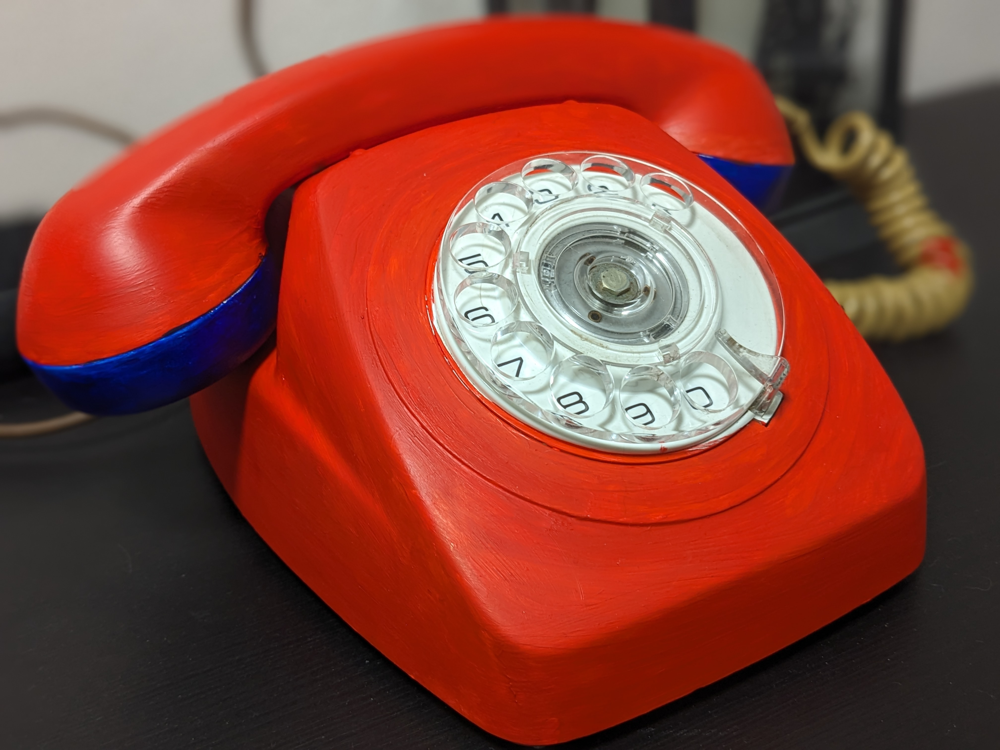

Credits
All assets belong to Clown Illustration
This is a fansite, and I, Skullaton, declare none of this my own.
This is only meant to be a fun shrine for my favourite character from Welcome Home, and I do not own Wally or Welcome Home.
My Fanfiction
Escapism
Rating: M
Genre: Romance/Horror
TW: Gore, Derealisation, Mind Manipulation, Unreliable Narrator
Summary:
The city is full of people. Then why did it feel so lonely?
Memories of clinking bottles and dazzling neon lights flickered through your mind.
Misty, car filled streets with humans, but no humanity.
A bridge and a phonebooth.
And a sweet voice that wanted you to come home.
You've wandered too far, and you don't know how to get back. But don't worry! You've made some friends from a colourful town that can help you!
Read Here
colds hands, warm hearts
Rating: G
Genre: Fluff, friends to lovers
TW: None! Pure cuteness, babey!
It's a chilly autumn evening and the neighbours are hosting their own fall festival! You decide to partake, enjoying the time with your friends.
It just so happens that one of your friends is also your biggest crush.
Read Here
Heart of Glass
Rating: M
Genre: Romance/Horror
TW: Derealisation, Mind Manipulation, Unreliable Narrator, Vomit, Horror
"In between
What I find is pleasing and I'm feeling fine
Love is so confusing, there's no peace of mind
If I fear I'm losing you. it's just no good
You teasing like you do"
A roller rink opened up and your best friend, Wally Darling, invited you on a date to roller disco! How could you say no to some jivey songs with friends?
Read Here
Apple Spice Pancakes
Rating: M
Genre: Horror
TW: Derealisation, Mind Manipulation, Kidnapping, Stockholm Syndrom, vomit mention
You decide to make some pancakes for your protector, Wally Darling, to show him some appreciation!
Read Here
Projects
Phone (WIP)

This was the first time ever painting something IRL! It's such a fun learning experience!
I still need to paint the bottom rows of colour. Then! Ring ring, neighbour. :)
Bracelets

This was my first time doing friendship bracelets! I'm super happy about it, but I still wish I could find different beads!